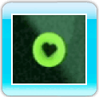

Spostati sullo schermo usando

. Premi

per ruotare in senso antiorario o

per ruotare in senso orario.
-
Far allungare i tentacoli
I tentacoli si allungano toccando organismi con il tentacolo o la parte del corpo dello stesso colore. Ciò permette anche, in modalità Infinita e
modalità Serpe,
di accumulare punti. Calcolare bene le rotazioni è il segreto per poter venire in contatto con gli organismi del colore giusto.
- Danni
Il tuo organismo subirà dei danni se tocca un altro organismo con un tentacolo o una parte del corpo di colore diverso. Se ciò succede, perderai una vita e il tentacolo si spezzerà nel punto in cui è avvenuto il contatto.
Nota: se a ricevere danni è un raggruppamento di segmenti, i segmenti torneranno alla lunghezza originale. Il tentacolo non si spezzerà,
ma perderai comunque una vita.
-
Game Over
Il gioco finisce quando perdi tutte le vite. Seleziona una delle opzioni descritte di seguito nello schermo Game Over.
|
MENU
|
Torna al menu principale. |
|
RIPROVA
|
Ricomincia a giocare nel livello o nella modalità attuali.
|
-
Bonus
Durante il gioco, è possibile trovare tre diversi tipi di bonus.
-
Bonus Cuore

Raccogliendo un bonus Cuore guadagni una vita.
-
Bonus Ciclone
 Quando raccogli un bonus Ciclone, il tuo organismo sarà circondato da una sfera energetica
Quando raccogli un bonus Ciclone, il tuo organismo sarà circondato da una sfera energetica
 che ti permetterà di scatenare un ciclone.
che ti permetterà di scatenare un ciclone.
-
Bonus Costrittore
(solo in modalità Infinita e Serpe)
I bonus Costrittore accorciano il tentacolo che toccano. Ce ne sono di tre tipi e si differenziano per il
numero di segmenti che possono raggruppare: 5, 10 o 20.
Cicloni
I cicloni permettono di assorbire tutti gli organismi colpiti per un periodo limitato di tempo. Raccogli un bonus Ciclone e segui le seguenti
istruzioni per scatenare un ciclone.

 Quando intorno al tuo organismo avrai concentrato l’energia sufficiente, rilascia il pulsante per scatenare un ciclone.
Quando intorno al tuo organismo avrai concentrato l’energia sufficiente, rilascia il pulsante per scatenare un ciclone.